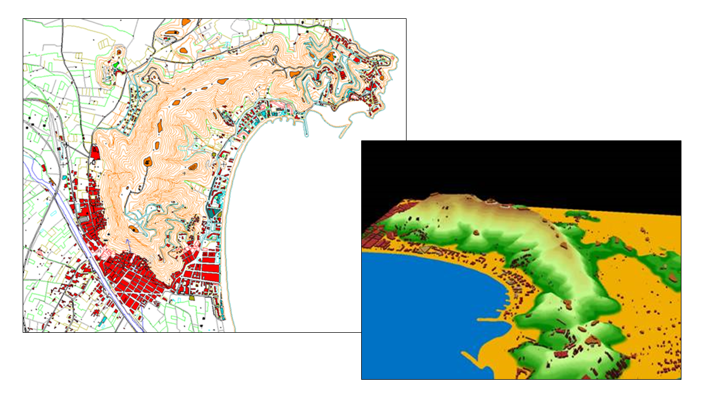

Operational states in the model
Network elements can exist in different operational states that affect hydraulic simulation. QGISRed allows managing these states directly from QGIS, synchronising the graphical representation with the EPANET model.
With version 0.17, QGISRed identifies and manages 13 distinct states for network elements, compared to EPANET's 3 basic states (open, closed, active).
Status management by element type
Each element type has its own set of possible states:
- Pipes: open, closed, with flow control valve
- Pumps: running, stopped, with active variable frequency drive
- Valves: open, closed, active (regulating according to type: PRV, PSV, FCV, TCV, PBV, GPV)
- Nodes: active, zero demand, isolated
Automatic graphical symbolisation
Each status has an associated distinct graphical symbology that is automatically applied on the QGIS map. This enables:
- Visually identifying elements that are out of service or in a special mode
- Detecting inconsistencies between the topological state and the operational state
- Generating operational cartography for field staff
- Distinguishing between the model's base state and alternative scenarios
The symbolisation follows a standardised colour code, customisable from the QGIS styles panel.